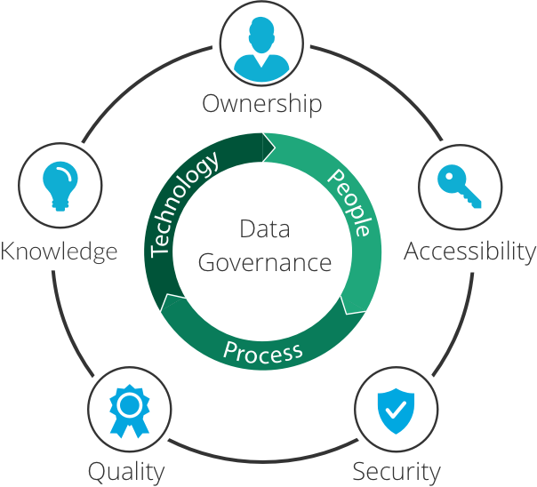

Orígenes matemáticos y filosóficos de la IA
Mucho antes de que existieran las computadoras modernas, filósofos y matemáticos ya se preguntaban si el pensamiento podía describirse mediante reglas lógicas. Estas ideas sentaron las bases de lo que hoy conocemos como Inteligencia Artificial.

Aristóteles y la lógica formal
Aristóteles fue uno de los primeros en intentar sistematizar el razonamiento humano mediante reglas lógicas. Sus ideas inspiraron siglos después el concepto de razonamiento computacional.

Leibniz y el cálculo lógico
Gottfried Wilhelm Leibniz soñó con crear una “máquina de razonamiento” que pudiera realizar deducciones lógicas, anticipando la noción de una computadora simbólica.

Data Governance
La gobernanza de datos es el conjunto de políticas, procesos y responsabilidades que garantizan la calidad, seguridad y uso adecuado de los datos en una organización. Su objetivo es asegurar que la información sea confiable, accesible y esté alineada con las normativas y objetivos estratégicos.
Metadatos y procedencia de dos lineas
Los metadatos describen las características y el contexto de los datos, facilitando su organización, búsqueda y comprensión. La procedencia de los datos rastrea su origen y transformaciones, garantizando transparencia, calidad y confianza en su uso.
“Podemos considerar que el razonamiento es una forma de cálculo.” — Leibniz